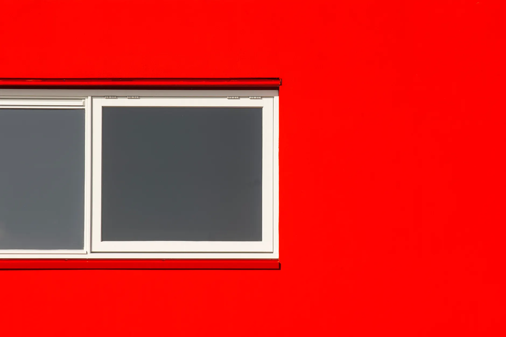
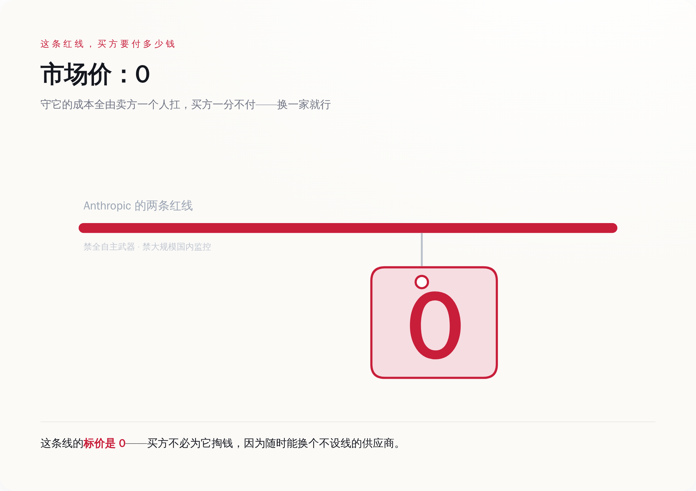

一、先看清这两条红线是什么，以及背后那张 2 亿美元的订单
Anthropic 的招牌，是"安全"。它给自己划的红线有两条：不用于对美国公民的大规模国内监控，不给全自主武器系统供能。翻译成大白话——不帮着监视自己人，不让 AI 自己决定杀谁。
听上去很正。但要理解后面发生的一切，你得先知道另一个事实：在这场冲突之前，Anthropic 是最早把前沿大模型部署进美军机密网络的公司之一。2025 年 7 月，它跟五角大楼签了一份约 2 亿美元的合同。也就是说，这两条红线不是挂在墙上的口号，是写进了一份真金白银的军火级订单里的附加条款。
买方对这两条附加条款的态度很直接：拿掉。国防部要的是模型能用于"任何合法用途"（any lawful purpose），至于什么叫合法、谁来定义合法，那是买方的事，不是卖方能划线的地方。
于是谈判从 2025 年 9 月开始卡壳，卡的不是价钱，是"你到底能不能管我怎么用"。这事本质上跟红线、跟道德都没关系，它就是一场关于用途控制权归谁的拉锯。只不过这次的买家，手里的筹码有点特别。
二、买方的两根杠杆：一根叫订单，一根叫黑名单
正常生意里，买方不满意，最狠的手段就是不买了，转身走人。国防部这个买方不一样，它手里有第二根杠杆，而且这根杠杆能要命。
2026 年 2 月 27 日，特朗普直接下令联邦机构"立即停止"（IMMEDIATELY CEASE）使用 Anthropic 的技术。同一天，国防部长把 Anthropic 列入了"供应链风险"名单。
这个名单是干什么用的，得说清楚，不然体会不到它的分量。所谓"供应链风险"认定，援引的是联邦供应链安全法规，它一旦生效，意味着所有想接国防订单的承包商、供应商，都得证明自己"没在用 Anthropic 的模型"。这不是终止一份合同，这是把一家公司从整个国防工业的采购链条里连根拔出去——你不光丢了这单，你让任何还想跟军方做生意的人，都不敢碰你。
更关键的是，这个标签以前是留给谁的：留给跟外国对手（比如中国）扯得上关系的企业。把它扣在一家美国本土的前沿 AI 实验室头上，这是头一回。用产业界的原话说，史无前例。
看明白这两根杠杆，你才明白买方在干嘛。它不是在跟你辩论自主武器道不道德——那是给外人看的题目。它是在用"我可以给你 2 亿的单，也可以让你一单都接不着"这两手，做一件很商业的事：价格发现。它想测出来，你那两条红线，在多大的压力下会松口。
